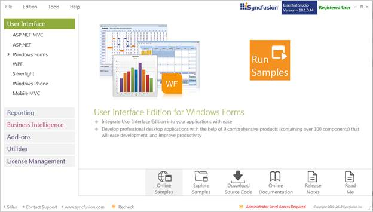
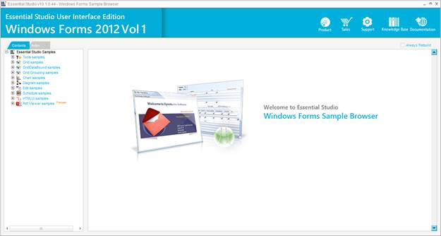
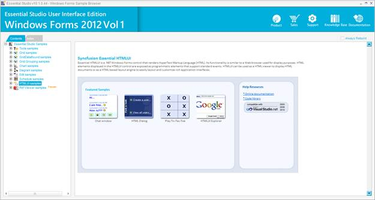

This section covers the location of the installed samples and describes the procedure to run the samples through the sample browser. It also lists the location of source code.
Sample Installation Location
The Essential HTMLUI Windows Forms samples are installed in the following location.
...\My Documents\Syncfusion\EssentialStudio\Version Number\Windows\HTMLUI.Windows\Samples\2.0
Viewing Samples
To view the samples, follow the steps below:
1. Click Start-->All Programs-->Syncfusion-->Essential Studio <version number> -->Dashboard. Essential Studio Enterprise Edition window is displayed.

Figure 2: Syncfusion Essential Studio Dashboard
2. In the Dashboard window, click Run Samples for Windows Forms under UI Edition. The UI Windows Form Sample Browser window is displayed.
 Note: You can view the samples in any of the
following three ways:
Note: You can view the samples in any of the
following three ways:
· Run Samples-Click to view the locally installed samples
· Online Samples-Click to view online samples
· Explore Samples-Explore BI Web samples on disk

Figure 3: User Interface Edition Windows Forms Sample Browser
3. Under Contents tab, expand the HTMLUI samples to view the samples of the control.

Figure 4: HTMLUI Windows Samples
4. A list of samples will be displayed on the left side of the page. Select any sample and browse through the features.
5. In the right pane, click Run Sample icon to run the selected sample.
Source Code Location
The source code for HTMLUI Windows is available at the following default location:
[System Drive]:\Program Files\Syncfusion\Essential Studio\[Version Number]\Windows\HTMLUI.Windows\Src